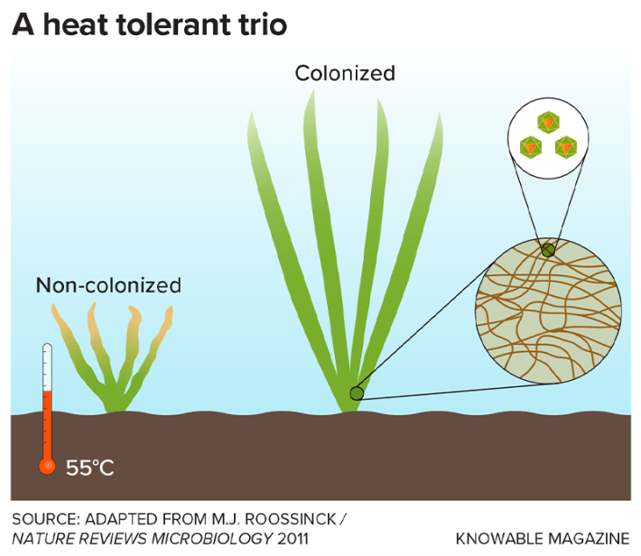
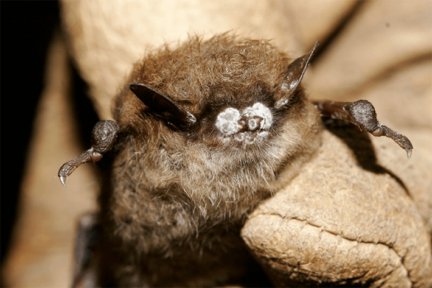
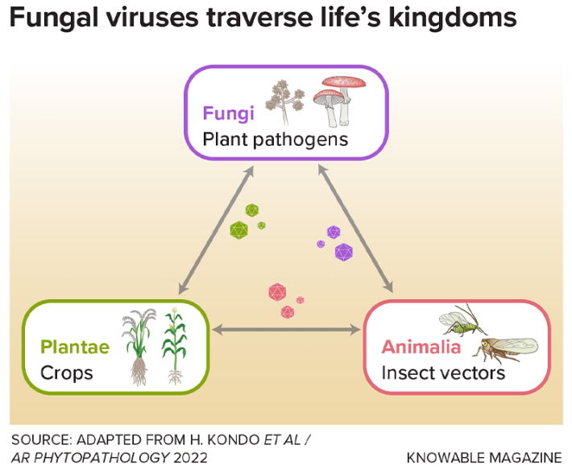

This articleoriginally appeared in Knowable Magazine.
Did you know that mushrooms can get sick?
It was 1948, on a Pennsylvania mushroom farm operated by the La France brothers, when scientists first observed a mushroom malady featuring puny caps and crooked stems. But only in 1962 did researchers finally realize viruses were behind La France disease, as it had come to be called, and that viruses caused other fungal afflictions as well—thus launching a whole new field of study.
Today, scientists researching fungal viruses are enjoying a “golden age of discovery,” says Matt Kasson, a mycologist (aka fungus researcher) at West Virginia University in Morgantown. Researchers are finding all sorts of weird and wonderful interactions between fungi and their viruses and even between fungal viruses and plants or animals. Most fungal viruses don’t seem to do much of anything to their hosts, but others definitely do: Sometimes they cause sickness, sure, but sometimes they offer surprising benefits.
Even today, most fungi remain undescribed, and analyses of their viruses are scarcer still. So there’s plenty more to learn. These days, scientists can use DNA and RNA sequencing to detect signs of viruses inside fungi even if there are no other indications that a virus is there. Scientists are particularly interested in viruses that cause disease in fungi that are themselves pathogens toplants, animals, or even people—making the viruses potential allies against fungal infection and pests.
Viruses show up in all kinds of fungi, in all kinds of forms
“Almost all fungi have viruses—they’re extremely common,” says Marilyn Roossinck, a virus ecologist retired from Penn State University in University Park. She adds: “They’re so cool.”
Many plant and animal viruses enclose their genes within a protein coat or even a membranous bubble, creating a particle that can flit from host to host. But “fungal viruses are very exceptional,” says Nobuhiro Suzuki, a virologist at Okayama University in Kurashiki, Japan.
Some have no coat at all, notes Suzuki, who coauthored an article about fungal virus diversity and evolution for the Annual Review of Phytopathology. They never seem to leave their host’s comfortable embrace. And in one interesting case, Suzuki and colleagues came across a virus that has no coat of its own but borrows the coat of another virus. They named the borrower yado-kari, the Japanese term for hermit crab, which translates to “borrowing a room to stay.” They called the other virus yado-nushi, for “landlord.”
Whether or not they sport outerwear, most fungal viruses don’t find new homes by going outside the host like, say, a flu virus does. They’re typically transmitted when two fungal strands meet in the soil. Strands from related fungi can fuse, sharing insides—and their viruses.
Fungal viruses also vary greatly in their genomes: Some get by with one or a handful of genes; others are genomicgiants, with more than 300 genes.
Fungal viruses are so common that some fungi are homes to multiple types—in one study, a fungus was found to contain 17 different viruses, and others have more than 20, says Jiatao Xie, a fungal virologist at the Huazhong Agricultural University in Wuhan, China, who coauthored a discussion of fungal virus diversity and evolution in the Annual Review of Microbiology. And they show up in a diverse array of hosts, such as fungi that live in marine environments, including in sea grass and sea cucumbers, or fungi that have emerged from thawing permafrost.
Viruses can give fungi properties they didn’t have before

Back in the early 2000s, colleagues of Roossinck found an interesting fungus-plant pairing in Yellowstone National Park, where soils can reach temperatures of 122 degrees Fahrenheit or higher. When the grass was alone, growing at 122 degrees caused it to shrivel and lose its green hue. If occasionally exposed to 149 degrees, it died. But if the grass hosted the fungus Curvularia protuberata, the pair could withstand 122 degrees and intermittent 149-degree spikes.
Roossinck, curious, investigated further, and found that the heat tolerance happened only when the fungus contained a virus that the team named Curvularia thermal tolerance virus.
In other words, the heat-tolerant pair was really a trio. “The virus has to be there,” says Roossinck. “They have to have all three.”
Scientists used viruses to track white-nose syndrome in bats

BAT BUSINESS: The United States spread of the white nose fungus in bats appears to be facilitated by a fungal virus that enhances spore formation. Credit: Ryan Von Linden, New York Department of Environmental Conservation / Flickr.
The white-nose syndrome that has killed more than 6 million bats in North America since 2006 is caused by a fungus, Pseudogymnoascus destructans, that grows on the creatures’ snouts, ears, and wings. Roossinck was not surprised to discover that this fungus harbors a virus. It’s a member of the Partitiviridae family, which have two or three genes and form polyhedral particles.
It’s been hard to map the spread of white-nose syndrome because bats travel so far. The virus provided a solution: Roossinck and colleagues traced the fungus by tracking mutations in the quickly evolving gene responsible for the virus’s coat. Changes in that gene over time revealed how the fungus-virus pair moved from Connecticut to other parts of the Eastern United States, and even to Washington state.
The virus is unique to North American P. destructans and it is, Roossinck thinks, what makes the fungusso destructive: Only fungi containing the virus can make plentiful viable spores, helping it spread from bat to bat.
Some viruses shuttle between fungi and plants

PATHOGEN PATHS: Certain viruses can be shared by fungi and plants, fungi and animals, or plants and animals, allowing cross-kingdom transmission that influences crops, their fungal pathogens, and the insects that transmit viruses.
Many plants and fungi are tightly linked—so much so that viruses can cross between them. In China’s Inner Mongolia province, researchers found a root-rot fungus, Rhizoctonia solani, in a potato plant. That fungus had a hanger-on: the cucumber mosaic virus, which usually infects (you guessed it) cucumbers, among many other fruits, vegetables, herbs, and weeds. In the lab, the virus could be passed from plants to fungi. Once inside fungi, it could spread to other plants.
So, cucumber mosaic virus is a plant-focused virus that also has a taste for fungi. The same research team next tested whether a fungus-focused virus could also be passed into plants. They found that the coatless Cryphonectria hypovirus 1, which typically infects fungi, could indeed infect tobacco plants. Alone, it could get into the leaves it was placed on but it couldn’t spread to other plant parts. But if another virus, like the tobacco mosaic virus, was also present, both viruses could travel around the plant. That’s because the tobacco plant virus contributed a “movement protein” that helped both viruses travel. The researchers think this ability to cross host kingdoms may be an important factor in viral spread and evolution.
Fungal viruses can protect plants—and maybe even animals—from fungal infections
FIGHTING WITH FUNGI: Scientists have developed a treatment for crops that uses a fungus that is infected with a virus. The treatment, which works like a vaccine against plant-harming fungi, resulted in noticeably greater rice yield (rightmost sheaves) than in untreated crops (leftmost sheaves). Credit: Courtesy of Jiatao Xie.
If fungi are the enemy of farmers growing plants, then viruses of fungi could be the farmers’ best friends.
Indeed, this has been shown before. In the mid-1900s, European scientists battling a fungus of chestnut trees discovered that the Cryphonectria hypovirus 1 slows the infection, giving the trees time to mount an immune response. “It worked pretty well,” says Kasson; the virus became a flagship example of viral biocontrol. Unfortunately, the same virus largely failed to protect American chestnuts; most of the American fungi were of genetic types unable to accept transfer of the virus from the donor fungi.
But the idea stands. Xie and his Huazhong colleague Daohong Jiang are developing a virus to help crops like rapeseed and soybean. It fights the fungus pest Sclerotinia sclerotiorum, which causes white mold in more than 700 plant species, Xie says. The virus, SsHADV-1, weakens the fungus’s ability to cause disease—but there’s more to it than that. Unlike most fungal viruses, it can leave the fungus and spread as free particles, or be transmitted by a fungus-eating gnat. Moreover, in a fungal Jekyll-and-Hyde switcheroo, the virus turns the fungus from something that harms plants to something that benefits them.
That’s because the virus-weakened fungus acts kind of like a vaccine. Exposure to the infected fungus triggers plant defenses, making the plants better able to fight off other kinds of disease, not just white mold. The virus-fungus combo also alters the plants’ hormone signaling and circadian rhythms in ways that boost growth.
Xie and colleagues developed a way to spray virus-infected fungal fragments over crops as a natural fungicide. The sprayed bits act as vaccine by outcompeting, or infecting, any plant-harming Hyde fungi until all that’s left is vaccinesque Jekyll. Indeed, Xie says, field trials showed that the treatment boosted yield of rapeseed, rice, and wheat.
The potential to transmit the virus by spray (or insect) makes it “a really big deal,” says Timothy James, a mycologist at the University of Michigan in Ann Arbor. Though the viral treatment hasn’t yet hit the market, patents are approved in China, Canada, and the U.S., Xie says. If successful, it would join the virus that weakens chestnut-blight fungus as another example of viral biocontrol.
And scientists speculate they might be able to protect animals from fungi, too, with the right viruses. James, for example, is trying protect amphibians from a deadly chytrid fungus, using what he’s learned from a virus that infects it. And Roossinck has experimented with viruses that infect Aspergillus mold, which can cause allergic reactions, often in people with asthma or cystic fibrosis, and fatal lung infections in immunocompromised people.
Those other treatments haven’t happened yet, says Xie. For now, it’s “just a thought.” 
Lead image: Viral infections often cause no symptoms in fungi, but mushroom virus X, a syndrome brought on by multiple viruses, visibly afflicts the white button mushroom,Agaricus bisporus. Credit: D. Eastwood et al / Applied and Environmental Microbiology 2015.